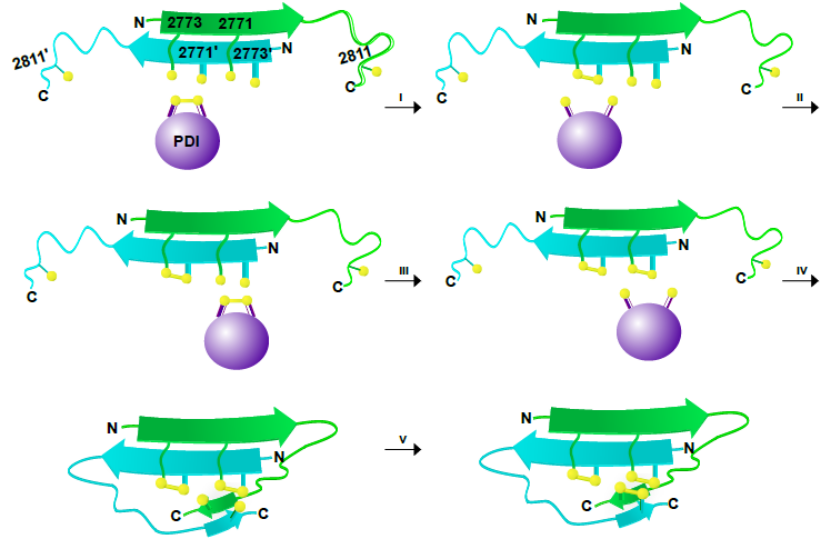
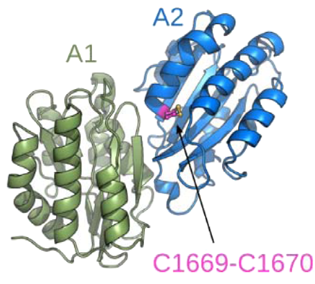
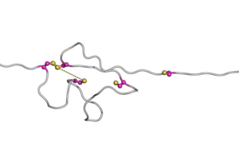

|
|
Disulfide bonds



Disulfide bonds play key roles for proteins, not only stabilizing their structure but also influencing their function. We explained the molecular mechanism of dimerization of the giant blood coagulation protein von Willebrand factor, vWF(Brehm et al. Thromb. Haemost. 2014, and Lippok et al. Blood. 2016. Up figure).
In collaboration with the group of Philip Hogg (Sydney), we identified that a vicinal disulfide bond of the vWF A2 domain (blue) acts as a molecular switch to control the activation of its neighbor domain (vWF A1, green) (Butera et al. Sci. Adv. 2018. Middle figure).
In addition, we revealed conformational accessibility as the primary requisite for disulfide bond shuffling in a protein domain (Kolsek et al. Sci. Rep. 2017. Down figure).
Read more:
Butera,..., Aponte-Santamaría, et al. Sci. Adv. (2018)
Kolsek, Aponte-Santamaría, Gräter. Sci. Rep. (2017)
Lippok, Kolsek, Löf, Aponte-Santamaría, et al. Blood (2016)
M. A. Brehm, V. Huck, C. Aponte-Santamaría, et al. Thromb Haemost. (2014)
Movie:
Disulfide bond shuffling
|
|